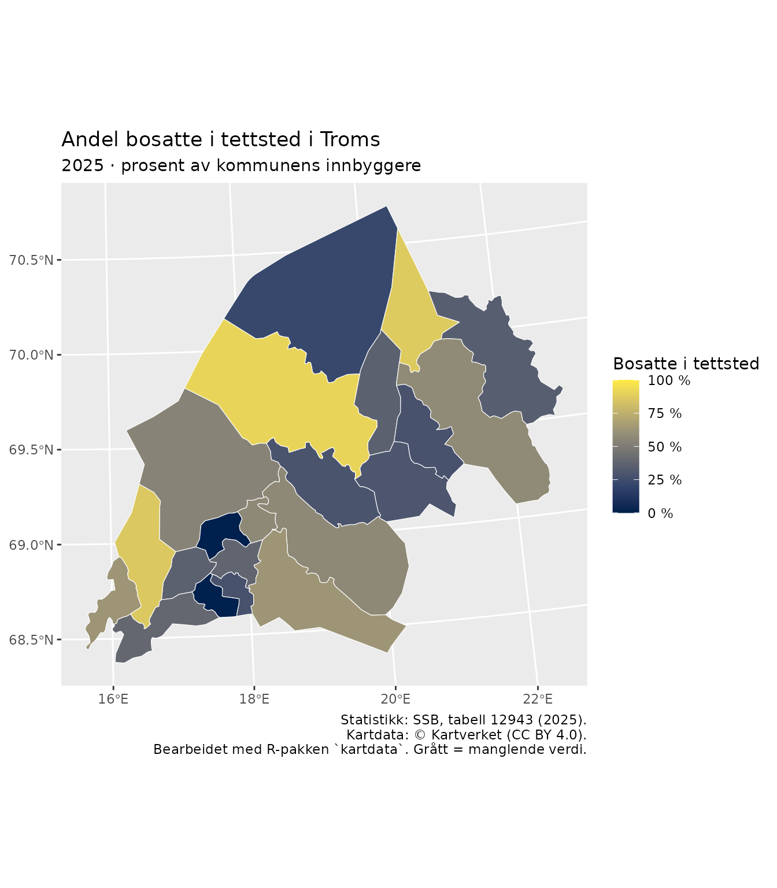
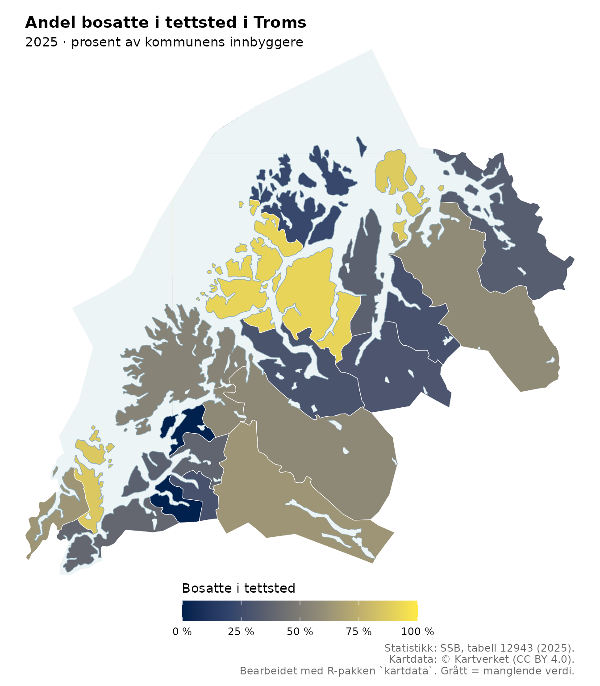

Et koropletkart gir hvert geografisk område en farge etter en tallverdi. Her fargelegger vi kommunene i Troms etter andelen bosatte i tettsted. En verdi på 91 betyr at 91 av 100 innbyggere bor i tettsted. Det betyr ikke at 91 prosent av kommunens areal er tettsted.
Vi skal først klargjøre en prosenttabell, deretter koble den til kommunegrenser, og til slutt gjøre kartet lettere å lese med en tydelig fargeskala og vannflater.
1. Last pakkene
Vi bruker kartdata til å hente kart, dplyr
til å koble tabeller og ggplot2 til å tegne.
sf håndterer geometri, og tibble brukes til å
skrive eksempeldataene som en liten tabell.
# Installer ved behov:
# install.packages(c("dplyr", "ggplot2", "tibble"))
library(kartdata)
library(dplyr)
#>
#> Attaching package: 'dplyr'
#> The following objects are masked from 'package:stats':
#>
#> filter, lag
#> The following objects are masked from 'package:base':
#>
#> intersect, setdiff, setequal, union
library(ggplot2)2. Klargjør prosentdataene
Én rad skal beskrive én kommune. Vi bruker det korte kolonnenavnet
andel_tettsted i koden og setter en mer forklarende tekst i
kartets tegnforklaring.
Tallene er fra SSB, tabell 12943: velg kommunene i Troms, statistikkvariabelen Andel bosatte i tettsted (prosent) og året 2025. Tabellen nedenfor gjengir disse prosentverdiene. Vi skriver dem direkte i koden for å konsentrere oss om koblingen til kartet.
prosentdata <- tibble::tribble(
~kommune, ~andel_tettsted,
"5501 Tromsø", 91,
"5503 Harstad - Hárstták", 86,
"5510 Kvæfjord", 63,
"5512 Dielddanuorri - Tjeldsund", 39,
"5514 Ibestad", 36,
"5516 Gratangen - Rivtták", 0,
"5518 Loabák - Lavangen", 28,
"5520 Bardu", 63,
"5522 Salangen", 38,
"5524 Målselv", 57,
"5526 Sørreisa", 57,
"5528 Dyrøy", 0,
"5530 Senja", 54,
"5532 Balsfjord", 29,
"5534 Karlsøy", 22,
"5536 Lyngen - Ivgu - Yykeä", 36,
"5538 Storfjord - Omasvuotna - Omasvuono", 30,
"5540 Gáivuotna - Kåfjord - Kaivuono", 28,
"5542 Skjervøy", 87,
"5544 Nordreisa - Ráisa - Raisi", 58,
"5546 Kvænangen", 34
)Bruk kommunenummer som koblingsnøkkel
Navn kan ha flere språkformer og skrivemåter. Derfor kobler vi på kommunenummer, ikke kommunenavn. I denne tabellen er de fire første tegnene koden. Vi lagrer den som tekst, slik at eventuelle ledende nuller beholdes.
prosentdata <- prosentdata |>
mutate(kommunenummer = substr(kommune, 1, 4))
stopifnot(
!anyNA(prosentdata$kommunenummer),
all(grepl("^[0-9]{4}$", prosentdata$kommunenummer)),
!anyDuplicated(prosentdata$kommunenummer),
all(is.na(prosentdata$andel_tettsted) |
prosentdata$andel_tettsted >= 0 & prosentdata$andel_tettsted <= 100)
)Kontrollene stopper koden hvis kommunenummer mangler, er feil formatert eller forekommer flere ganger, eller hvis en prosent er utenfor 0–100. I egne data bør kommunenummer helst komme i en egen tekstkolonne allerede ved innlesing.
Null og manglende verdi er forskjellige:
0 betyr her null prosent, mens NA betyr at vi
ikke har en verdi. Ikke erstatt NA med null for å få hele
kartet fargelagt.
3. Hent kommunegrensene
N2000 er et generalisert kartgrunnlag som vi bruker til et oversiktskart. For mer detaljerte kart kan du velge en annen serie.
series <- "N2000"
area <- "Troms"
omrader <- n_areas(series)
subset(omrader, name == area)
#> [1] area name epsg format
#> <0 rows> (or 0-length row.names)n_areas() viser publiserte områder, formater og
koordinatsystemer. Den henter bare metadata. Neste kall,
n_layers(), trenger selve arkivet og kan derfor utløse
nedlasting.
lag <- n_layers(series = series, area = area)
"Kommune" %in% lag
#> [1] TRUE
kommuner <- n_get("Kommune", series = series, area = area)
names(kommuner)
#> [1] "objtype" "navn" "oppdateringsdato" "kommunenummer"
#> [5] "SHAPE_Length" "SHAPE_Area" "SHAPE"
sf::st_crs(kommuner)
#> Coordinate Reference System:
#> User input: ETRS89 / UTM zone 33N
#> wkt:
#> PROJCRS["ETRS89 / UTM zone 33N",
#> BASEGEOGCRS["ETRS89",
#> ENSEMBLE["European Terrestrial Reference System 1989 ensemble",
#> MEMBER["European Terrestrial Reference Frame 1989"],
#> MEMBER["European Terrestrial Reference Frame 1990"],
#> MEMBER["European Terrestrial Reference Frame 1991"],
#> MEMBER["European Terrestrial Reference Frame 1992"],
#> MEMBER["European Terrestrial Reference Frame 1993"],
#> MEMBER["European Terrestrial Reference Frame 1994"],
#> MEMBER["European Terrestrial Reference Frame 1996"],
#> MEMBER["European Terrestrial Reference Frame 1997"],
#> MEMBER["European Terrestrial Reference Frame 2000"],
#> MEMBER["European Terrestrial Reference Frame 2005"],
#> MEMBER["European Terrestrial Reference Frame 2014"],
#> ELLIPSOID["GRS 1980",6378137,298.257222101,
#> LENGTHUNIT["metre",1]],
#> ENSEMBLEACCURACY[0.1]],
#> PRIMEM["Greenwich",0,
#> ANGLEUNIT["degree",0.0174532925199433]],
#> ID["EPSG",4258]],
#> CONVERSION["UTM zone 33N",
#> METHOD["Transverse Mercator",
#> ID["EPSG",9807]],
#> PARAMETER["Latitude of natural origin",0,
#> ANGLEUNIT["degree",0.0174532925199433],
#> ID["EPSG",8801]],
#> PARAMETER["Longitude of natural origin",15,
#> ANGLEUNIT["degree",0.0174532925199433],
#> ID["EPSG",8802]],
#> PARAMETER["Scale factor at natural origin",0.9996,
#> SCALEUNIT["unity",1],
#> ID["EPSG",8805]],
#> PARAMETER["False easting",500000,
#> LENGTHUNIT["metre",1],
#> ID["EPSG",8806]],
#> PARAMETER["False northing",0,
#> LENGTHUNIT["metre",1],
#> ID["EPSG",8807]]],
#> CS[Cartesian,2],
#> AXIS["(E)",east,
#> ORDER[1],
#> LENGTHUNIT["metre",1]],
#> AXIS["(N)",north,
#> ORDER[2],
#> LENGTHUNIT["metre",1]],
#> USAGE[
#> SCOPE["Engineering survey, topographic mapping."],
#> AREA["Europe between 12°E and 18°E: Austria; Denmark - offshore and offshore; Germany - onshore and offshore; Norway including Svalbard - onshore and offshore."],
#> BBOX[46.4,12,84.42,18.01]],
#> ID["EPSG",25833]]
stopifnot("kommunenummer" %in% names(kommuner))
kommuner <- kommuner |>
mutate(kommunenummer = as.character(kommunenummer))kommuner er et sf-objekt: en tabell som
også inneholder geometri. Vi trenger både kommunenummeret og geometrien
videre. Ingen reprojisering er nødvendig her, siden alle kartlag hentes
med samme serie, område og standard-EPSG.
Statistikken gjelder 2025, mens kartdata henter det
publiserte kartgrunnlaget som er tilgjengelig ved nedlasting. Ved arbeid
med historisk statistikk må du kontrollere at kommunegrensene passer til
statistikkåret. Like kommunenummer er en nødvendig kontroll, men
garanterer ikke uendrede grenser.
4. Kontroller koblingen før du tegner
Først finner vi kommunenumrene i kartet.
st_drop_geometry() fjerner geometrien fra denne
kontrolltabellen, og distinct() gir én rad per kode.
kartnokler <- kommuner |>
sf::st_drop_geometry() |>
distinct(kommunenummer)
data_uten_kart <- anti_join(prosentdata, kartnokler, by = "kommunenummer")
kart_uten_data <- anti_join(kartnokler, prosentdata, by = "kommunenummer")
data_uten_kart
#> # A tibble: 0 × 3
#> # ℹ 3 variables: kommune <chr>, andel_tettsted <dbl>, kommunenummer <chr>
kart_uten_data
#> [1] kommunenummer
#> <0 rows> (or 0-length row.names)Begge tabellene bør være tomme når områdene og kodene passer sammen.
-
data_uten_karthar rader: Noen statistikkrader kan ikke plasseres på kartet. Undersøk kodefeil, feil område eller endret kommuneinndeling. -
kart_uten_datahar rader: Noen kommuner mangler statistikk. Vi beholder dem i kartet og viser dem med en egen gråfarge.
Nå legger vi prosentkolonnen til karttabellen:
prosentkartdata <- kommuner |>
left_join(
select(prosentdata, kommunenummer, andel_tettsted),
by = "kommunenummer",
relationship = "many-to-one"
)
stopifnot(
inherits(prosentkartdata, "sf"),
nrow(prosentkartdata) == nrow(kommuner)
)
prosentkartdata |>
sf::st_drop_geometry() |>
select(kommunenummer, andel_tettsted)
#> kommunenummer andel_tettsted
#> 1 5534 22
#> 2 5510 63
#> 3 5522 38
#> 4 5516 0
#> 5 5532 29
#> 6 5514 36
#> 7 5542 87
#> 8 5524 57
#> 9 5536 36
#> 10 5518 28
#> 11 5501 91
#> 12 5530 54
#> 13 5544 58
#> 14 5503 86
#> 15 5538 30
#> 16 5512 39
#> 17 5528 0
#> 18 5520 63
#> 19 5540 28
#> 20 5546 34
#> 21 5526 57Ved å starte med karttabellen og bruke left_join()
beholder vi alle kartobjektene og geometrien. Et
inner_join() ville fjernet objekter uten treff.
relationship = "many-to-one" krever at hvert kartobjekt har
høyst én statistikkrad; flere geometrirader for samme kommune er
tillatt.
5. Tegn et enkelt koropletkart
geom_sf() tegner geometrien. Inne i aes()
knytter vi fyllfargen til prosentkolonnen. Faste egenskaper, som fargen
på grensene, står utenfor aes().
enkelt_kart <- ggplot(prosentkartdata) +
geom_sf(aes(fill = andel_tettsted), colour = "white", linewidth = 0.2) +
scale_fill_viridis_c(
option = "cividis",
limits = c(0, 100),
breaks = seq(0, 100, 25),
labels = function(x) paste0(x, " %"),
na.value = "#BDBDBD",
name = "Bosatte i tettsted"
) +
labs(
title = "Andel bosatte i tettsted i Troms",
subtitle = "2025 · prosent av kommunens innbyggere",
caption = paste("Statistikk: SSB, tabell 12943 (2025).",
"Kartdata: © Kartverket (CC BY 4.0).",
"Bearbeidet med R-pakken `kartdata`. Grått = manglende verdi.",
sep = "\n")
)
enkelt_kart
Vi bruker cividis-skalaen,
som har en ordnet lyshetsgradient og er utformet med tanke på fargesyn.
Grensene c(0, 100) gjør at samme prosent får samme farge i
flere kart. En automatisk skala kunne gitt ulike farger for samme verdi
i ulike utsnitt.
Tallene er allerede prosenter fra 0 til 100. Derfor legger etikettfunksjonen bare til prosenttegnet; den skal ikke multiplisere tallene med 100.
6. Gjør geografien lettere å kjenne igjen
Et kommunekart følger administrative grenser, som også kan gå ut i sjøen. Da kan kommuneformene være vanskelige å kjenne igjen. Vi legger derfor vannflater over kommunefargene og tegner kystlinjen øverst.
hav <- n_get("Havflate", series = series, area = area)
innsjoer <- n_get("Innsjø", series = series, area = area)
kyst <- n_get("Kystkontur", series = series, area = area)Dette er flere lag fra samme arkiv, så filene kan gjenbrukes fra cache. Selve innlesingen av hvert nytt lag tar fortsatt tid.
Rekkefølgen på lagene betyr noe: Det siste laget tegnes øverst. Her tegner vi kommunene først, vannet over og kystkonturen til slutt. Vannflatene endrer bare hva vi ser, ikke kommunenes prosentverdier.
vannfarge <- "#EDF4F6"
kystfarge <- "#8BAAB8"
utsnitt <- sf::st_bbox(kommuner)
ferdig_kart <- enkelt_kart +
geom_sf(data = hav, inherit.aes = FALSE,
fill = vannfarge, colour = NA) +
geom_sf(data = innsjoer, inherit.aes = FALSE,
fill = vannfarge, colour = kystfarge, linewidth = 0.15) +
geom_sf(data = kyst, inherit.aes = FALSE,
colour = kystfarge, linewidth = 0.25) +
coord_sf(
xlim = unname(utsnitt[c("xmin", "xmax")]),
ylim = unname(utsnitt[c("ymin", "ymax")]),
expand = FALSE
) +
guides(fill = guide_colourbar(
title.position = "top", barwidth = grid::unit(7, "cm")
)) +
theme_void() +
theme(
legend.position = "bottom",
plot.margin = margin(8, 8, 8, 8),
plot.title = element_text(face = "bold"),
plot.caption = element_text(colour = "grey40")
)
ferdig_kart
inherit.aes = FALSE holder vann- og kystlagene
uavhengige av kartets øvrige estetiske koblinger.
coord_sf() holder utsnittet fast selv om et bakgrunnslag
strekker seg lenger. theme_void() fjerner akser og
rutenett, mens tegnforklaringen og kildeopplysningene beholdes.
Kommunegrensene er allerede tegnet av det første laget. Flere grenselag kan legges til dersom de hjelper leseren, men alle tilgjengelige lag trenger ikke være med i kartet.
7. Tolk og publiser kartet
Kartet sammenligner andeler i kommuner, ikke antall innbyggere eller plasseringen av tettstedene. En stor kommune får mye plass på kartet selv om den har få innbyggere. En farge gjelder kommunens samlede verdi og sier ikke at alle deler av kommunen har samme bosettingsmønster.
Før du publiserer et kart med egne data:
- Oppgi kilde og årstall for statistikken, og kontroller at kommuneinndelingen passer til statistikkåret.
- Undersøk radene som ikke fikk treff i koblingen. Behold skillet mellom null og manglende verdi.
- Oppgi enhet og bruk samme fargeskala hvis flere kart skal sammenlignes.
- Krediter kartgrunnlaget og opplys om egne endringer. Kartverkets data er CC BY 4.0; se også Kartverkets bruksvilkår.
Du kan lagre kartet med:
ggsave("troms-koroplet.png", ferdig_kart, width = 18, height = 22,
units = "cm", dpi = 300, bg = "white")Se Cache, oppdatering og ytelse for raskere gjentatt bruk og Forstå kartdataene for mer om formater og attributter.